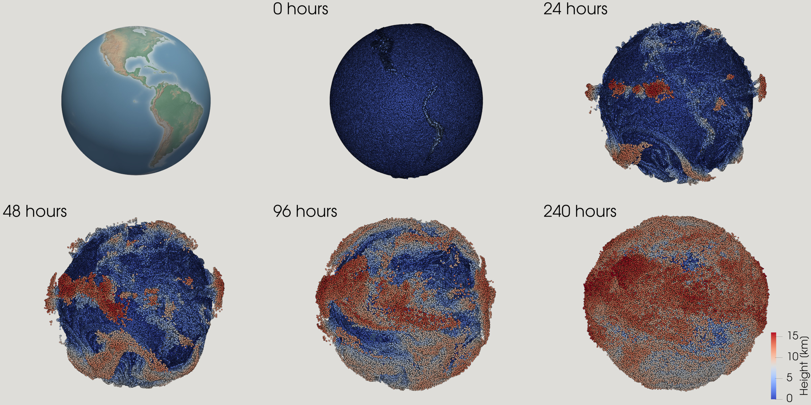
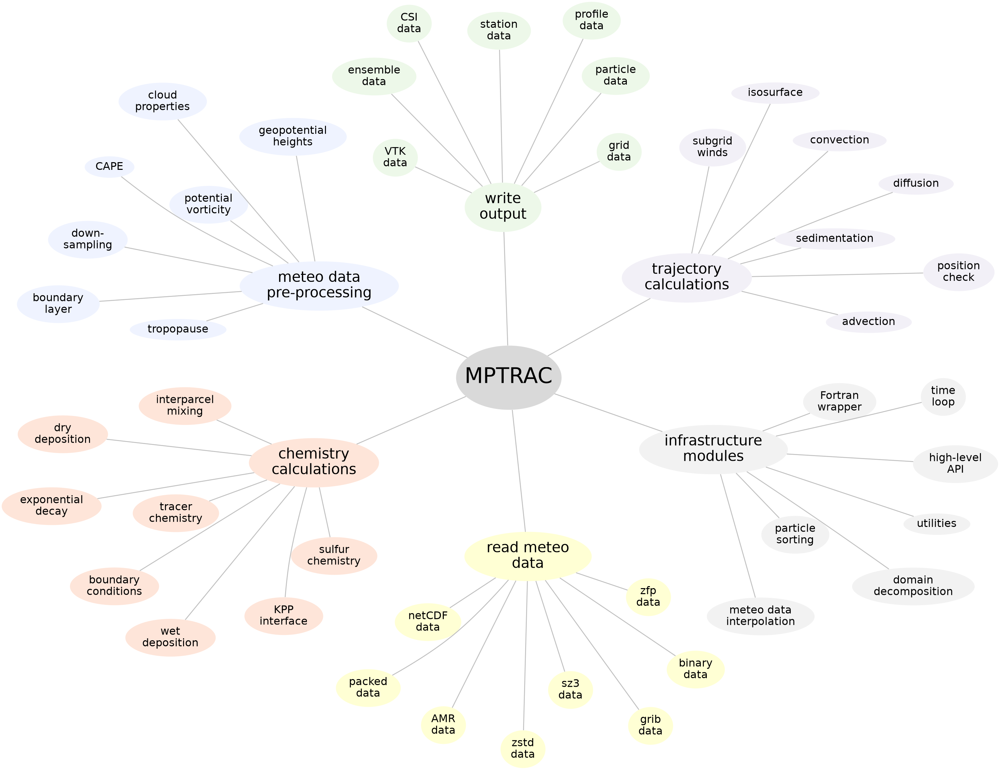

Welcome to MPTRAC!
Massive-Parallel Trajectory Calculations (MPTRAC) is a Lagrangian particle dispersion model for the analysis of atmospheric transport processes in the free troposphere and stratosphere. The model is designed for execution on parallel computing systems and supports large ensembles of trajectory simulations for research and operational applications.

Features
MPTRAC provides various capabilities for Lagrangian atmospheric transport simulations, including:
-
Trajectory calculations: Air parcel trajectories are computed by solving the kinematic equation of motion using horizontal wind and vertical velocity fields from global reanalysis or forecast datasets. Simulations target the free troposphere and stratosphere.
-
Stochastic perturbations and mixing: Mesoscale diffusion and subgrid-scale wind variability are represented using a Langevin formulation. An inter-parcel exchange scheme is available to model mixing between neighboring particles.
-
Physical and chemical process modules: Optional parameterizations are available for convection, sedimentation, exponential decay, gas-phase and aqueous-phase chemistry, and wet and dry deposition.
-
Meteorological data preprocessing: Meteorological input data can be preprocessed to derive variables such as boundary layer height, convective available potential energy (CAPE), geopotential height, potential vorticity, and tropopause diagnostics.
-
Output and visualization options: The model supports multiple output formats, including particle trajectories, gridded fields, ensemble statistics, vertical profiles, point samples, and station data. Visualization is supported through interfaces to Gnuplot and ParaView.
-
Parallel execution: MPTRAC supports hybrid parallelization using MPI, OpenMP, and OpenACC, enabling execution on systems ranging from single workstations to HPC clusters and GPU-enabled platforms.
-
Open-source development: MPTRAC is distributed under the GNU General Public License (GPL) and developed in an open repository, allowing users to inspect, modify, and contribute to the codebase.

Getting Started
Installation instructions are provided in the installation guide, which describes how to set up MPTRAC on local systems and HPC environments. The quick start guide introduces the basic workflow and input structure required to run simple trajectory simulations, helping new users become familiar with the model's core functionality and input structure.
MPTRAC can also be run through a browser-based interface, the MPTRAC Web Runner. This interface allows users to run simulations without local installation and is commonly used for teaching, demonstrations, and exploratory studies.
Contributions, questions, and feedback from the research community are welcome. Further information on development and usage can be found throughout this manual. If you have questions, feedback, or require support, please feel free to reach out.
Contact
Dr. Lars Hoffmann
Jülich Supercomputing Centre, Forschungszentrum Jülich, Germany
e-mail: l.hoffmann@fz-juelich.de